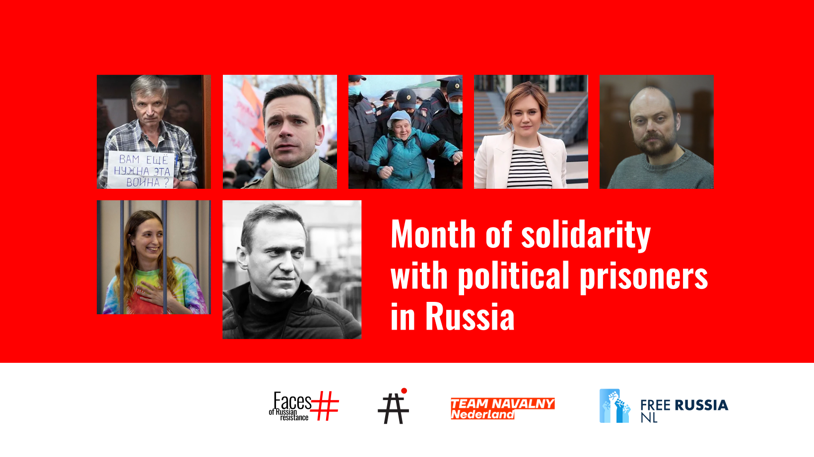

Month of Solidarity with Political Prisoners

During the month of June the Month of Solidarity will take place in
Amsterdam and The Hague.
We cordially invite you for the opening of the program with the
exhibition Faces of Russian Resistance Beursplein, Amsterdam, 28 May,
17.00 For the opening we expect the attendance of Evgenia
Kara-Murza, a Russian human rights activist and wife of political
prisoner Vladimir Kara-Murza, twice-poisoned Russian opposition leader,
imprisoned since 11 April 2022 for protesting the war against Ukraine.
"Month of Solidarity with Political Prisoners" is a dynamic initiative
aimed at exposing the suppression of democracy and human rights in
Russia under Putin's regime. Featuring exhibitions, discussions, and
educational sessions in Amsterdam and The Hague, held from 1 June until
6 July, this program seeks to mobilise international support for Russian
political prisoners. It addresses decades of political persecution and
opposes state propaganda by showcasing the ongoing resistance in Russia
and among the diaspora. By joining, participants can help advance
transparency, justice, and democratic governance in Russia, challenging
the authoritarian shadow cast by Putin's government.
Partners:
-
Free Russia NL: Originating as a grassroots
initiative, this foundation has evolved into a pivotal organisation
that advocates for Russian-speaking democratic activists in the
Netherlands, providing essential humanitarian and informational
support.
-
Faces of Russian Resistance: Documents and exhibits
the lives and sacrifices of Russians who have dared to stand against
tyranny, emphasising their stories to inspire global action.
-
Team Navalny Netherlands: Focuses on sustaining the
legacy of Alexei Navalny through advocacy for sanctions and support
for Russian expatriates.
-
Avtozak LIVE: Continues to track and report on
political persecution in Russia, supporting legal defence efforts
and maintaining a public database of injustices.
Program Highlights:
-
28 May: Exhibition "Faces of Russian Resistance".
An in-depth look at individuals who have been imprisoned for their
opposition to the regime, featuring multimedia presentations and
personal stories.
17.00 - Beursplein, Amsterdam
-
4 June, Alexey Navalny's birthday - opening of the exhibition "Navalny"
A photographic journey through Navalny's activism and the broader
political landscape of resistance in Russia.
The Hague, tba
-
The Future of the Russian Orthodox Church: A
critical examination of the Church's role in supporting the state's
agenda, featuring dissenting voices from within the religious
community.
Date and location tba.
-
20 June: Book presentation "Voices of Russian Resistance". The book offers
narratives from the front lines of resistance, compiled and
introduced by prominent journalist Ilya Azar.
Bookshop Pegasus, Amsterdam, time: tba.
-
20 June: Mediazona documentary film program attended by director Egor Isaev, followed by a Public session on Radical protest in conditions of war and dictatorship, looking further in resistance tactics., by Avtozak LIVE and Zona Solidarnosti
19.00 - Lab111, Amsterdam
-
23 June: Theatre reading of "Finist, The Bright Falcon” by Svetlana Petriychuk and music by Maria Nemtsova and Vitaly Vatulya,
14.00 - De Balie. More info and tickets here
-
29 June: Independent journalism in repressive conditions: public talk with journalist Pavel Kanygin,
19.00 - Waag Futurelab, Amsterdam
-
30 June: International rally in support of political prisoners in Russia, more info soon
More events could be added to the program, changes in program may apply - please follow our socials for announcements!
Instagram | Telegram | LinkedIn